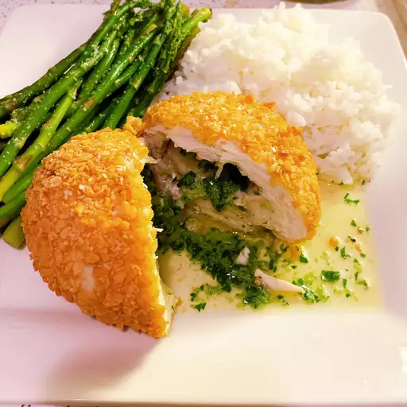

Chicken Kiev

About the dish:
Chicken Kiev, also known as Chicken Kyiv, is a dish made of chicken fillet pounded and rolled around cold butter, then coated with egg and bread crumbs, and either fried or baked. Its origins are disputed, simple dishes were being made by Russians in the 18th century inspired by French cuisine. It is now popular in Russia and nearby states, including the states in the former USSR & the Eastern Bloc.
Ingredients:
- 4 pieces of skinless, boneless chicken breast halves, pounded to ¼ inch thickness (Should weigh about 8 ounces)
- 2 cloves garlic, minced
- 1 pinch salt
- 2 tablespoons chopped fresh flat-leaf parsley
- 6 tablespoons unsalted butter
- salt & pepper to taste
- 1 cup all-purpose flour
- 2 large eggs, beaten
- 2 cups panko bread crumbs
- 1 pinch cayenne pepper
- 2 cups vegetable oil for frying (Change the amount as needed)
Steps:
- Gather all ingredients.
- Grind garlic and pinch of salt together in a mortar and pestle until smooth; add parsley and mix well. Pound butter into garlic mixture with the pestle until well combined. Wrap butter mixture in plastic wrap; refrigerate until cold, at least 15 minutes.
- Season chicken breasts with salt and pepper. Place 1/4 of the butter mixture in the center of the wider end of each chicken breast.
- Fold the narrower end of each chicken breast up over the butter to form a tight pocket around the butter; gather the sides of each chicken breast to the center to form a round ball. The top of each chicken ball will be smooth and the bottom will be gathered. Tightly wrap each chicken ball in plastic wrap; transfer to a plate and chill in the freezer until the gathered bottoms hold together and are slightly firm, about 30 minutes.
- Whisk flour and 2 teaspoons salt together in a shallow bowl. Whisk eggs together in another shallow bowl. Pour panko bread crumbs into a third bowl.
- Remove chicken breast balls from plastic wrap. Gently press them into the flour mixture to coat; shake off any excess flour. Dip into beaten eggs, then press into bread crumbs. Place breaded chicken on a plate; cover with plastic wrap, and return to the freezer to chill until firm, about 15 minutes.
- Heat oil in a deep-fryer or large saucepan to 350 degrees F (175 degrees C). Preheat the oven to 400 degrees F (200 degrees C). Line a baking sheet with aluminum foil. Working in batches, place chicken, gathered-side down, in the hot oil and cook until lightly golden, about 1 minute per side. Transfer chicken to the prepared baking sheet; sprinkle salt and cayenne pepper over the top.
- Bake in the preheated oven until you can hear the butter start to sizzle on the baking sheet, 15 to 17 minutes. An instant-read thermometer inserted into the center should read at least 165°F (74°C).
- Let rest for a few minutes before serving with rice or by itself.